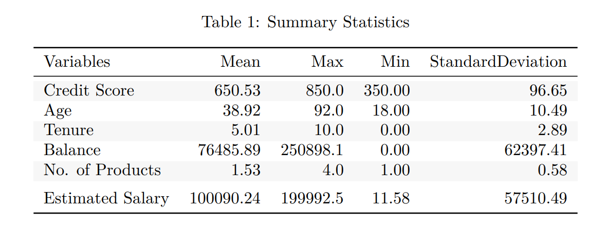
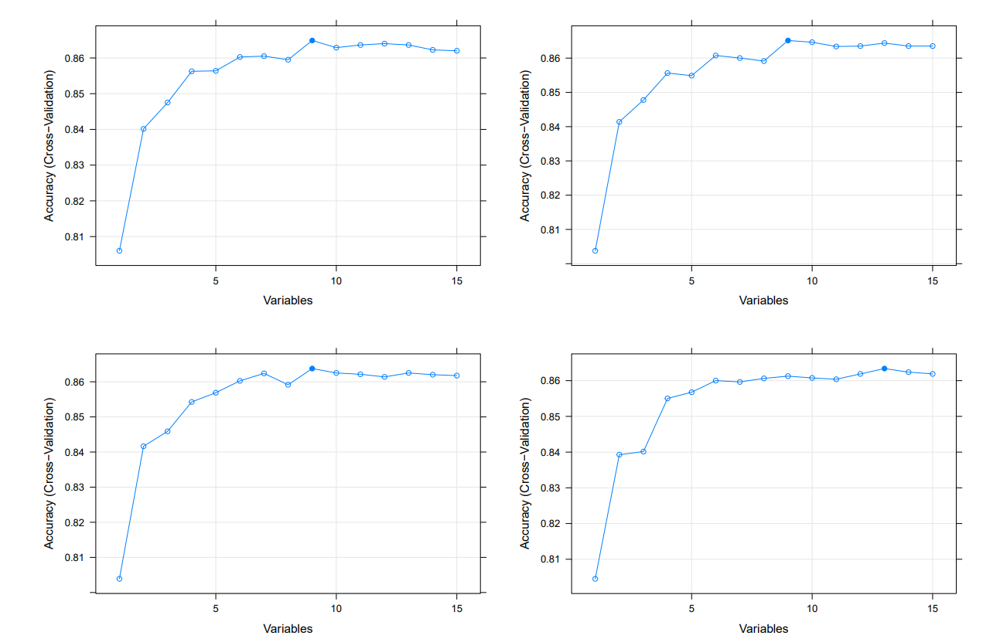
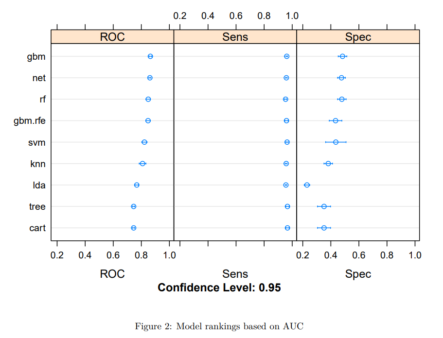
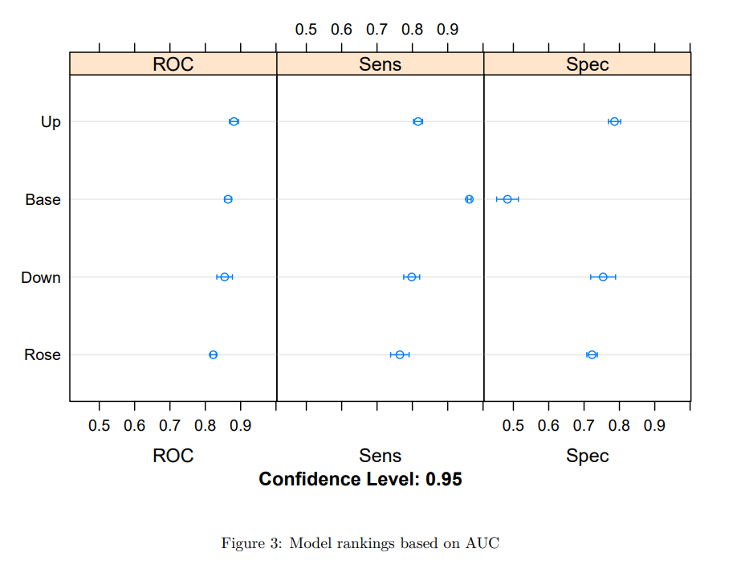
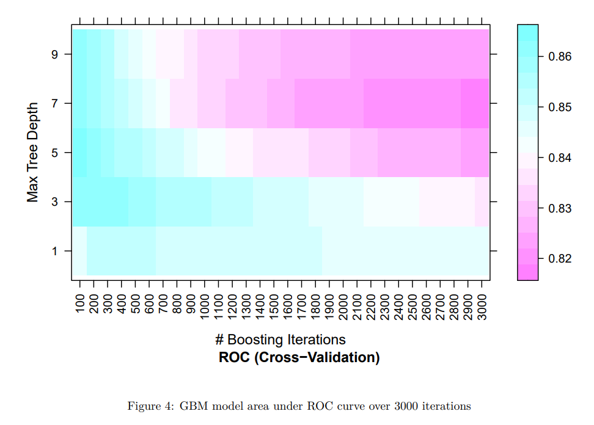
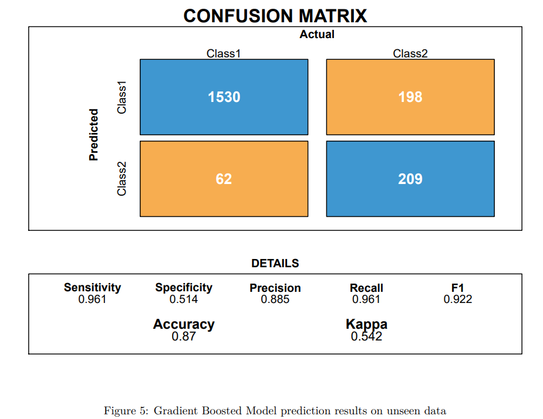
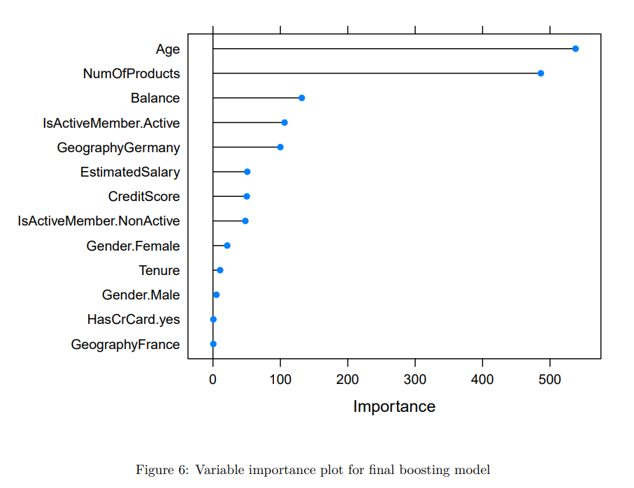

This research was one of my final projects in the second term of my masters degree. It is the style of an academic research paper and in it I try find the optimal model for predicting customer churn in the banking industry. I then go on to show the factors that are most optimal in predicting customer churn and make suggestions for which a company can implement.
Churn modelling has become a vital part of Customer Relationship Management (CRM). At it’s core churn modelling is used to predict those customers who are most likely to leave a business. From this point companies can work on caring programmes that can help to stabilise or incentivise churn customers to stay. The topic has seen a rapid increase in accuracy due to the inclusion of Machine Learning (ML) algorithms. Especially in binary classification problems such as the one analysed in this paper, ML can produce an accurate result. This paper looks at churn in the banking sector.
Customer churn is the act of customers to stop doing business with a company in a given period. It is becoming an issue particularly in service-based industries and as a result a major focus for any business that works in such a highly competitive sector. Banks provide numerous services through multiple different products, like ATM’s, debit and credit cards, and internet banking, etc. As services like banking move online, customers will only increase scrutiny over products as more and more information is available. This in turn will only further the likelihood of customer churn as the option that maximises utility for customers will be more accessible. This maximisation of utility could depend on many factors, such as interest rate, customer interaction, overdraft limits, age specific products, etc, each of which could be a potential reason for a customer to leave the business. Due to these factors, there lies opportunity in developing a model which can predict customers that are likely to churn based on their available data. Secondly, it would be highly beneficial to identify the most important factors that contribute to customer churn.
This leads to the main questions asked by this paper.
Hence this paper includes a basic evaluation of several models to find the optimal one. From this the features are analysed to show what the model has identified as most significant. The paper does not give a comprehensive list of the most important factors that affect banks. As well as this the study will focus only on commercial banks with the aim of observing the trends in the general population.
From papers as early as Bolton (1998), CRM importance has been studied. In his paper Bolton proposes that the length of time a customer has been with a service provider is one of the most important factors in keeping a good relationship. This duration estimation model is based on a customer’s perceived future utility weighted against the cost of ending the current relationship. He concludes by saying customers with longer tenure with a business perceive future costs by less.
As time has progressed and model complexity has grown the emergence of classification trees benefited the field of churn modelling. Neslin et al. (2006) in their comparative study of models and the different factors that affect such models find that in general trees and logistic regression are robust in classification problems to techniques used in pre-processing. For example, in reduced feature data sets and in highly subsampled data sets, decision trees, random forests and logistic regressions prove to still have a high level of sensitivity and specificity. They also find that in reduced feature sets, specificity is greatly improved. One area that they talk about for future research is in variable selection methods to help data reduction.
Improving upon the analysis of individual models, ensemble methods can produce greater levels of predictive ability. Kumar and Ravi (2008) propose an ensemble method with majority voting, incorporating multi-layer perceptron, logistic regression, decision trees, random forest, and a support vector machine to create an accurate estimation of credit card churn predictions. They like Neslin et al. (2006), find that using subsampling methods, in this case SMOTE, provide greater accuracy in predictions on unseen data. As well as this model improvement with cross validation also helps to add to the accuracy of their estimates.
Recent studies have tried to predefine categories from which models can be built upon. Around this time the introduction and practical implementation of boosting models becomes apparent. Lu et al. (2012) attempt to help with model prediction through clustering customers into low and high-risk churn groups, whereby the churn risk is three times higher in one cluster.
Another popular method for analysis of data is the use of deep learning models such as neural nets (Agrwal et al. 2017). Benefits of using neural nets is the integrated feature elimination aspect that means that irrelevant features do not typically impact the model as it would in other algorithms.
In many of the paper evaluations of a range of models, it is found that boosting models typically leads to higher levels of accuracy or precision based on the metric scrutinised. For example, using AdaBoost in a range of models Vafeiadis et al. (2015) found that they could improve accuracy and the F measure in decision tree and support vector machine models. Boosting models appear to be growing in popularity with uptake on machine learning sites such as kaggle.com.
From this point in time models appear to be situational and picked based both on author preference as well as predictive power. For example, Keramati et al. (2016) return to a familiar decision tree model to present their findings.
This paper tries to build upon the work of the papers detailed and include each aspect of improvement. As such the final model used in prediction is a gradient boosted model which in testing provided the best predictive power. Subsampling plays a key part in several initial papers and as such it is included, as well as feature selection, which was a growth point for Neslin et al. (2006), and so is included. Finally, to try and encompass a fair selection of models that are currently used we run an initial test of several to decide which to move forward with.
The sections follow as a methodology section which lays out the data processing element subsection followed by a model selection and tuning section. Section 3 lays out the results and interpretation of the data in the business context. The paper is closed with a summary of the results and possible future research suggestions in section 4
This section is split into two sections which outline the analysis conducted. First is the data section where all information on the predictors is detailed.
The data obtained is accessed from Kaggle.com and represents typical data customer information for a bank. The datasets outcome variable, Exited, shows whether the customer remained with the bank or left, and this was converted to a factor variable with levels, Stay (0) and Leave (1). As would be expected in churn results, the dependent variable shows an uneven split in the data with 79.6% of customers staying at the bank with 20.4% leaving. When evaluating models and performance results this will be kept in mind. The data has ten thousand observations with thirteen features which are a mix of categorical and numerical values.
The predictor variables show some insights into likelihood of churn. Below is a table detailing the descriptive statistics of the included non-dummy variable predictors.

The data showed no immediate quality issues, for example an illogical salary or age, and so no values have been manipulated. As well as this, oulier or “Anomaly” results have not been excluded following from the data as they are believed to be more likely a systematic pattern (Gelman, Hill, & Vehtari, 2020). When looking at box plots, balance, credit score, estimated salary, credit card, number of products and tenure all show no indication on changing levels of churn. However, the other variables do show variance. The average age of those who leave tends to be higher and if a customer is deemed to be an inactive member, they are more likely to churn. Finally, female customers are more likely to leave.
The predictors show no signs of lack of unique variables in analysis, (1. Max Kuhn, 2019) and there is virtually no correlation in the data.
For testing, the data is split into training and validation sets with an 80:20 split respectively. After the split, the outcome variables class distribution remained at 79.6% and 20.4% in both samples due to use of the createdatapartition() function in the caret package preserving the distribution, (2. Max Kuhn, 2019).
Finally, in the data cleaning to aid the linear discriminant model the data is standardised. This follows the equation below whereby each data point results with a zero mean (\(\mu\)) and unit variance (\(\sigma\)). The formula for standardisation is as follows \(y = ( x - \mu) / \sigma\).
The first step in processing is creating dummy variables for the binary variables which include, gender, HasCrCard, IsActiveMember and Location. For location, only three countries are specified and each are given an individual dummy variable. To evaluate performance of the features, recursive feature elimination is employed to try and identify an optimal number of variables from our data set. Each variable is ranked based on the variable’s importance to a model and at each iteration of feature selection the best ranking predictors are retained to measure the next model’s performance (3. Max Kuhn, 2019). Using the rfe() package in R, the variables are evaluated on a random forest model and to reduce the impact of “selection bias” talked about in Ambroise and McLachlan (2002), 5 fold cross validation is used. The summary of the variables additional accuracy is shown below.

Figure 1 shows that after 6 variables the additional accuracy gained is minimal. As well as this, due to the random selection-based nature of cross validation, running tests repeatedly we find variance in the optimal number of variables ranging from 6-12. As such, we cannot accurately identify the optimal number consistently and so it is selected as the minimum of 6. With the top 4 variables shown below.This reduced feature set is included as a separate model in the selection testing.
In total nine models are evaluated with the ranking metric being area under the receiver operating characteristic (ROC) curve. The included models are
Figure 2. shows the models ranked on AUC and shows their sensitivity and specificity.

As is shown in figure 2, the gradient boosted model (gbm) initially has the highest AUC and due to this we choose it for further analysis.
Boosting as an origin works on the idea of creating multiple inaccurate rules of classification and combining them to create an accurate set of rules for prediction. The exact model used is the AdaBoost algorithm introduced by Freund and Schapire (1999) and the idea of the model is iterative learning through adding weak classifiers to create a much stronger classifier. Each classifier is weighted based on its additional accuracy (Lu et al. 2012). As such the reduced feature version only serves as a negative due to the inbuilt variable selection process of the gbm model
One potential problem that is identified in figure 3 is the contrast between sensitivity and specificity. Stemming from a medical origin both words are similar. Sensitivity is the probability of predicting disease correctly, given that the true state is has disease. Specificity is the probability of predicting the absence of disease correctly given that the true state is does not have disease. In the above case sensitivity looks at the probability that the customer stays. Looking at the gradient boosted model there is a large value of … which means that the model predicts … percent of the correct values. However, it has a much lower value of specificity In all of the models this is low. This is assumed to be due to the class imbalances talked about in section 3.1.

To counteract the class imbalance, three subsampling methods were evaluated. Ling and Li (1998) use up-sampling to reduce the impact, whereby the minority class is sampled with replacement bringing the number of observations up to approximately the same number as the majority class. In the data this results in a class split of 6371 for both classes. The second subsampling method used is down-sampling, where a random selection of the majority class is sampled to match the percentage of the minority class. The “leave” value in the data only makes up 20.4% of the data and as such this is matched in the “stay” values. This generates the number of observations for each individual class as 1630. The final method evaluated is a hybrid method that both down sample and generate new values for the minority class. This paper uses the ROSE method from Menardi and Torelli (2010), which attempts to balance the classes. This method results with 4045 observations for stay and 3956 for leave.
The different distributions are then used to build separate models and we can see the results above. When up-sampling is used a large improvement in specificity is observed while sensitivity falls. This does lead to an overall increase in ROC, however, possibly due to the data both in the training and validation sets having the same class distribution, the up-sampled model performs worse in testing. This is because of the lower sensitivity probability. As such, we continue with the initial gbm model as it has been the most consistent. For tests where the class distribution is not the same in both data sets or unknown, the up-sampled model would be explored for tuning.
For model tuning the gbm model has four hyperparameters. Interaction depth, number of trees, shrinkage, and minimum number of observations in a node. Interaction depth sets the highest level of variable interaction allowed while training. The number of trees is simply the number of iterations of the model. Shrinkage is also known as the learning rate and is used for shrinking the impact of each additional fitted tree. It effectively is a penalising measure for the importance of each consecutive iteration and typically the lower the value used the better OOB performance achieved (Ridgeway 2007). For each of the talked about parameters a range of values was evaluated. Interaction depth was evaluated for odd values from 1 to 9. The number of trees was evaluated from 100 to 3000 in intervals of 100. Shrinkage and the observation value were set permanently at 0.1 and 20 respectively. The results of this are shown below.

To clarify the results, the best model tuning values obtained were a tree number of 100, and interaction depth of 5. This is the model used in the results.
The table below shows the confusion matrix for the final model talked about in section 2.3, as well as some accuracy statistics.

The gbm model shows high sensitivity but lacks in specificity. This means that from the data the ability to correctly predict true positive values is high while the probability of predicting true negative values is much lower. In relation to customer churn, it means that the model is much better at predicting that a customer will stay over a customer that will leave. The next evaluation metrics discussed are precision, recall and the F-measure. Precision is the proportion of the predicted positive classes that are correct. Recall is the proportion of the predicted positive classes that were correctly identified. Finally, as neither statistic alone is solid enough evidence the F measure combines both precision and recall into one value, whereby a value closer to one implies a better combined precision and recall is achieved, (Fawcett 2006). As is shown in figure 6, both the precision and recall values are high and achieve a F measure of 0.92 meaning the overall ability to predict that the customer stays is accurate and precision means that we hit these results often. An overall accuracy of 0.86 may seem good initially however, as Galar et al. (2011) talk about accuracy in the context of severe class imbalance can be misleading. It does not distinguish between the correct number identified in both classes. This is reflected in the kappa value of 0.52.
Regardless of the imbalance for unseen data the gbm model does provide some skill in prediction. With an ROC of 0.86 there is a large proportion of correct estimations.
As is shown above the final model provides a reasonable set of predictions for the data set. It can somewhat accurately identify results and from this we can determine using the gbm models built in importance index the most important variables identified. These are shown below.

As is clear from the importance index there are two main features which play the main role in prediction, age, and the number of products. Variable importance is determined by calculating the relative importance of each variable. This is calculated by how much the mean squared error over all trees was improved or decreased because of the choice of the variable at the split. This means in the figure 6 above age and the number of products owned proved to be the two most important variables reliably over multiple iterations.
In relation to literature Keramati et al. (2016) also find that in their results that age is important in deciding whether customers will churn or not. In a similar vein number of transactions is a key feature in the model which arguably mirrors number of products in our model. However, their main feature was the total amount of transaction value in dollars used in online banking. As well as this they find that tenure is important while in our results it is barely significant.
Moving forward to answer the initial research question, the factors that banks should primarily focus on are evident from figure 6. Clearly if age and the number of products used in the bank are the two main reasons for customers not churning. As such two possible recommendations could be the implementation of age specific products that could help reduce churn at relevant age groups. Secondly, the increase of products. This could possibly be implemented in the form of online banking and the increase additional products such as balance and spending insights.
This paper attempted to through a highly predictive model provide an insight into the main features that affect customer churn. From the gradient boosted model used it can be said that age and the number of products that customers have greatly affect the chances of whether they will churn or not. As a suggestion then based on the limited data used these two values should be taken for further analysis. The paper tries to incorporate as many methods as possible from data manipulation through to prediction that are currently being used in literature. However, it is found that some of the processes such as subsampling and feature selection provide little to no benefit in the gradient boosted model combined with the data imbalances.
In a business sense based on the data we suggest that the main features that banks should focus on are age and number of products. This in turn should help to reduce the level of customer churn as these are the two main features identified in succesfully predicting a customer stays with the bank.
A limitation of the study comes in the form of limited data. As talked about in section 3 Keramati et al. (2016) find that other banking features are the main factors affecting churn. However, the data used in this study has limited banking features. As such, future research should look at a wider range of banking products to see if specific products contribute more. As well as this while several models were evaluated initially only one was taken further for tuning. Other models such as a neural net or random forest may have ended with more accurate results depending on tuning. As such deeper dives into these individual models should be explored in future papers.
Link to csv download for r : https://raw.githubusercontent.com/Petermcc042/MastersYearData/main/indices_m.csv
#For pdf knit
library(bookdown)
#for models
library(caret)
#for ROC curve
library(MLeval)
#for correlation
library(corrplot)
#for data analysis
library(tidyverse)
#for tables
library(kableExtra)
#for variable importance plot
library(gbm)
#for subsampling
library(ROSE)
#acquire data
data <- read.csv("https://raw.githubusercontent.com/
Petermcc042/MastersYearData/main/Churn_Modelling.csv")
#remove variables and factor others
data <- data[,-c(1,2,3)]
data$Exited <- factor(data$Exited, levels = c(0,1),
labels = c("Stay", "Leave"))
data$Gender <- factor(data$Gender)
data$HasCrCard <- factor(data$HasCrCard, levels = c(0,1),
labels = c("no","yes"))
data$IsActiveMember <- factor(data$IsActiveMember, levels = c(0,1),
labels = c("NonActive","Active"))
# summarize the class distribution
prop.table(table(data$Exited))
statstable <- summary(data)
# Relationship with Churn and Numerical variables
data %>%
{bind_cols(select_if(., is.numeric),
select_at(., "Exited"))
} %>%
gather(-Exited, key = "var", value = "value") %>%
ggplot(aes(x = Exited, y = value, fill = Exited)) +
geom_boxplot() +
theme(legend.position = "none") +
facet_wrap(~ var, scales = "free") +
ggtitle("Numerical Variable Relationship with Churn")
# Distribution by Credit Card
data %>%
mutate(HasCrCard = factor(HasCrCard,
labels = c("No Card", "Has Card"))) %>%
group_by(HasCrCard, Exited) %>%
count() %>%
ggplot(aes(x = HasCrCard, y = n, fill = Exited)) +
geom_col(position = "fill") +
scale_y_continuous(labels = scales::percent) +labs(y = NULL, x = NULL) +
theme(plot.title = element_text(hjust = 0.5),
legend.position = "bottom") +
ggtitle("Credit Card")
# Distribution by isactivemember
data %>%
mutate(IsActiveMember = factor(IsActiveMember,
labels = c("Inactive", "Active"))) %>%
group_by(IsActiveMember, Exited) %>%
count() %>%
ggplot(aes(x = IsActiveMember, y = n, fill = Exited)) +
geom_col(position = "fill") +scale_y_continuous(labels = scales::percent) +
labs(y = NULL, x = NULL) +
theme(plot.title = element_text(hjust = 0.5),
legend.position = "bottom") +
ggtitle("Active Member")
# Distribution by Gender
data %>%
mutate(Gender = factor(Gender, labels = c("Female", "Male"))) %>%
group_by(Gender, Exited) %>%
count() %>%
ggplot(aes(x = Gender, y = n, fill = Exited)) +
geom_col(position = "fill") +scale_y_continuous(labels = scales::percent) +
labs(y = NULL, x = NULL) +
theme(plot.title = element_text(hjust = 0.5),
legend.position = "bottom") +
ggtitle("Gender")
#check for zero var
nzv <- nearZeroVar(data %>% select_if(is.numeric))
filteredDescr <- (data %>% select_if(is.numeric))[, -nzv]
dim(filteredDescr)
#visual correlation matrix
cormat<-cor(data %>% select_if(is.numeric))
corrplot(cormat,method='number')
highlyCorDescr <- findCorrelation(cormat, cutoff = .01)
filteredDescr <- filteredDescr[, -highlyCorDescr]
descCor2 <- cor(filteredDescr)
summary(descCor2[upper.tri(descCor2)])
#check for linear combinations
comboInfo <- findLinearCombos(data %>% select_if(is.numeric))
comboInfo
#creation of dummy variables
dummies <- dummyVars(Exited ~ ., data = data)
dummydata <- data.frame(predict(dummies, newdata = data))
data <- cbind(dummydata, Exited = data$Exited)
#validation training splits
# create a list of 80% of the rows in the original dataset
validationIndex <- createDataPartition(data$Exited, p=0.80, list=FALSE)
# select 20% of the data for validation
validation <- data[-validationIndex,]
# use the remaining 80% of data to training and testing the models
training <- data[validationIndex,]
# summarize the class distribution
prop.table(table(training$Exited))
prop.table(table(validation$Exited))
#preprocess data
preproc1 <- preProcess(training[,c(1,7,8,9,10,15)],
method=c("center", "scale"))
training <- predict(preproc1, training)
summary(training)
preproc2 <- preProcess(validation[,c(1,7,8,9,10,15)],
method=c("center", "scale"))
validation <- predict(preproc2, validation)
summary(validation)
#recursive feature elimination
rfecontroler <- rfeControl(functions=rfFuncs, method="cv", number=5)
# run the RFE algorithm
results1 <- rfe(training[,1:15], training[,16],
sizes=c(1:15), rfeControl=rfecontroler)
results2 <- rfe(training[,1:15], training[,16],
sizes=c(1:15), rfeControl=rfecontroler)
results3 <- rfe(training[,1:15], training[,16],
sizes=c(1:15), rfeControl=rfecontroler)
results4 <- rfe(training[,1:15], training[,16],
sizes=c(1:15), rfeControl=rfecontroler)
# summarize the results
# list the chosen features
predictors(results1)
#set up for model eval
control <- trainControl(method="cv",
number=5,
summaryFunction = twoClassSummary,
classProbs = TRUE,
savePredictions = TRUE,
verboseIter = F)
metric <- "ROC"
#Model evaluation
# linear algorithms
set.seed(7)
fit.lda <- train(Exited~., data=training,
method="lda", metric=metric, trControl=control)
# nonlinear algorithms
# CART
set.seed(7)
fit.cart <- train(Exited~., data=training,
method="rpart", metric=metric, trControl=control)
# kNN
set.seed(7)
fit.knn <- train(Exited~., data=training,
method="knn", metric=metric, trControl=control)
# advanced algorithms
# SVM
set.seed(7)
fit.svm <- train(Exited~., data=training,
method="svmRadial", metric=metric, trControl=control)
#Decision Tree
set.seed(7)
fit.tree <- train(Exited~., data = training,
method="rpart", metric=metric, trControl=control)
# Random Forest
set.seed(7)
fit.rf <- train(Exited~., data=training,
method="rf", metric=metric, trControl=control)
# Neural Net
set.seed(7)
fit.net <- train(Exited~., data=training,
method="nnet", metric=metric, trControl=control, verbose = F)
#Gradient Boosted
set.seed(7)
fit.gbm <- train(Exited~., data = training,
method="gbm", metric=metric, trControl=control, verbose = F)
fit.gbm2 <- train(Exited~Age+NumOfProducts
+IsActiveMember.Active+IsActiveMember.NonActive
+Balance+GeographyGermany,
data = training,
method="gbm", metric=metric, trControl=control, verbose = F)
#summarize accuracy of models
modelresults <- resamples(list(lda=fit.lda, cart=fit.cart, knn=fit.knn,
svm=fit.svm, rf=fit.rf, net=fit.net, gbm=fit.gbm,
tree=fit.tree, gbm.rfe=fit.gbm2))
summary(modelresults)
fit.gbm$bestTune
#subsampling testing
down_train <- downSample(x = training[, -ncol(training)],
y = training$Exited)
table(down_train$Class)
set.seed(7)
fit.gbm.down <- train(Class~.,
data = down_train,
method = "gbm",
metric = metric,
trControl = control,
verbose = F)
up_train <- upSample(x = training[, -ncol(training)],
y = training$Exited)
table(up_train$Class)
set.seed(7)
fit.gbm.up <- train(Class~.,
data = up_train,
method = "gbm",
metric = metric,
trControl = control,
verbose = F)
rose_train <- ROSE(Exited ~ ., data = training)$data
table(rose_train$Exited)
set.seed(7)
fit.gbm.rose <- train(Exited ~ .,
data = rose_train,
method = "gbm",
metric = metric,
trControl = control,
verbose = F)
#summarize accuracy of models
subsampleresults <- resamples(list(Base=fit.gbm,
Down=fit.gbm.down,
Up=fit.gbm.up,
Rose=fit.gbm.rose))
summary(subsampleresults)
#testing models based on roc
test_roc <- function(model, data) {
library(pROC)
roc_obj <- roc(data$Exited,
predict(model, data, type = "prob")[, "Stay"],
levels = c("Stay", "Leave"))
ci(roc_obj)
}
#subsampling model results
inside_models <- list(original = fit.gbm,
down = fit.gbm.down,
up = fit.gbm.up,
ROSE = fit.gbm.rose)
inside_resampling <- resamples(inside_models)
inside_test <- lapply(inside_models, test_roc, data = training)
inside_test <- lapply(inside_test, as.vector)
inside_test <- do.call("rbind", inside_test)
colnames(inside_test) <- c("lower", "ROC", "upper")
inside_test <- as.data.frame(inside_test)
summary(inside_resampling, metric = "ROC")
#look at ROC curve for upsample
res <- evalm(fit.gbm.up, plots = 'r',rlinethick=0.8,fsize=8,bins=8)
# summarize Best Model
fit.gbm.up$bestTune
plot(varImp(fit.gbm.up, scale = FALSE), top = 15)
#run number of iterations of different models and output best version
#for up sample
gbmGrid <- expand.grid(interaction.depth = c(1, 3, 5, 7, 9),
n.trees = (1:30)*100,
shrinkage = 0.1,
n.minobsinnode = 20)
set.seed(7)
fit.gbm.up.tune <- train(Class~.,
data = up_train,
method = "gbm",
metric = metric,
trControl = control,
verbose = F,
tuneGrid = gbmGrid)
fit.gbm.up.tune
ggplot(fit.gbm.up.tune)
plot(fit.gbm.up.tune, plotType = "level",
scales = list(x = list(rot = 90)))
fit.gbm.up.tune$bestTune
#run best uptune model
uptuneGrid <- expand.grid(interaction.depth = 9,
n.trees = 3000,
shrinkage = 0.1,
n.minobsinnode = 20)
set.seed(7)
fit.uptune <- train(Class~.,
data = up_train,
method = "gbm",
metric = metric,
trControl = control,
verbose = F,
tuneGrid = uptuneGrid)
#tune base model
set.seed(7)
fit.gbm.tune <- train(Exited~.,
data = training,
method = "gbm",
metric = metric,
trControl = control,
verbose = F,
tuneGrid = gbmGrid)
fit.gbm.tune$bestTune
#check best base model
bestGrid <- expand.grid(interaction.depth = 5,
n.trees = 100,
shrinkage = 0.1,
n.minobsinnode = 20)
set.seed(7)
fit.gbm.best <- train(Exited~.,
data = training,
method = "gbm",
metric = metric,
trControl = control,
verbose = F,
tuneGrid = bestGrid)
res <- evalm(fit.gbm.best, plots = 'r',rlinethick=0.8,fsize=8,bins=8)
#look at test predictions of models
# estimate skill on the validation dataset
predictions <- predict(fit.gbm, validation)
#confusion matrix
confusionMatrix(predictions, validation$Exited)
# estimate skill on the validation dataset
predictions <- predict(fit.uptune, validation)
#confusion matrix
confusionMatrix(predictions, validation$Exited)
# estimate skill on the validation dataset
predictions <- predict(fit.gbm.best, validation)
#confusion matrix
confusionMatrix(predictions, validation$Exited)
#output fancy confusion matrix table
predictions <- predict(fit.gbm, validation)
cm <- confusionMatrix(predictions, validation$Exited)
draw_confusion_matrix <- function(cm) {
layout(matrix(c(1,1,2)))
par(mar=c(2,2,2,2))
plot(c(100, 345), c(300, 450), type = "n",
xlab="", ylab="", xaxt='n', yaxt='n')
title('CONFUSION MATRIX', cex.main=2)
# create the matrix
rect(150, 430, 240, 370, col='#3F97D0')
text(195, 435, 'Class1', cex=1.2)
rect(250, 430, 340, 370, col='#F7AD50')
text(295, 435, 'Class2', cex=1.2)
text(125, 370, 'Predicted', cex=1.3, srt=90, font=2)
text(245, 450, 'Actual', cex=1.3, font=2)
rect(150, 305, 240, 365, col='#F7AD50')
rect(250, 305, 340, 365, col='#3F97D0')
text(140, 400, 'Class1', cex=1.2, srt=90)
text(140, 335, 'Class2', cex=1.2, srt=90)
# add in the cm results
res <- as.numeric(cm$table)
text(195, 400, res[1], cex=1.6, font=2, col='white')
text(195, 335, res[2], cex=1.6, font=2, col='white')
text(295, 400, res[3], cex=1.6, font=2, col='white')
text(295, 335, res[4], cex=1.6, font=2, col='white')
# add in the specifics
plot(c(100, 0), c(100, 0), type = "n", xlab="", ylab="",
main = "DETAILS", xaxt='n', yaxt='n')
text(10, 85, names(cm$byClass[1]), cex=1.2, font=2)
text(10, 70, round(as.numeric(cm$byClass[1]), 3), cex=1.2)
text(30, 85, names(cm$byClass[2]), cex=1.2, font=2)
text(30, 70, round(as.numeric(cm$byClass[2]), 3), cex=1.2)
text(50, 85, names(cm$byClass[5]), cex=1.2, font=2)
text(50, 70, round(as.numeric(cm$byClass[5]), 3), cex=1.2)
text(70, 85, names(cm$byClass[6]), cex=1.2, font=2)
text(70, 70, round(as.numeric(cm$byClass[6]), 3), cex=1.2)
text(90, 85, names(cm$byClass[7]), cex=1.2, font=2)
text(90, 70, round(as.numeric(cm$byClass[7]), 3), cex=1.2)
# add in the accuracy information
text(30, 35, names(cm$overall[1]), cex=1.5, font=2)
text(30, 20, round(as.numeric(cm$overall[1]), 3), cex=1.4)
text(70, 35, names(cm$overall[2]), cex=1.5, font=2)
text(70, 20, round(as.numeric(cm$overall[2]), 3), cex=1.4)
}
#table 1: stats table
#mean values
meanValues <- c(mean(data$CreditScore),mean(data$Age),
mean(data$Tenure), mean(data$Balance),
mean(data$NumOfProducts), mean(data$EstimatedSalary))
meanValues <- round(meanValues, 2)
#max values
maxValues<- c(max(data$CreditScore),max(data$Age),
max(data$Tenure), max(data$Balance),
max(data$NumOfProducts), max(data$EstimatedSalary))
maxValues <- round(maxValues, 2)
#min values
minValues<- c(min(data$CreditScore),min(data$Age),
min(data$Tenure), min(data$Balance),
min(data$NumOfProducts), min(data$EstimatedSalary))
minValues <- round(minValues, 2)
#sd values
sdValues<- c(sd(data$CreditScore),sd(data$Age),
sd(data$Tenure), sd(data$Balance),
sd(data$NumOfProducts), sd(data$EstimatedSalary))
sdValues <- round(sdValues, 2)
statsTable <- data.frame( Variables = c("Credit Score", "Age",
"Tenure", "Balance",
"No. of Products", "Estimated Salary"),
Mean = meanValues,
Max = maxValues,
Min = minValues,
StandardDeviation = sdValues)
statsTable %>% kbl(caption = "Summary Statistics", booktabs = T) %>%
kable_styling(latex_options = c("striped", "hold_position"))
#figure 1: rfe plots
par(mar = c(4, 4, .1, .1))
# plot the results
plot(results1, type=c("g", "o"))
plot(results2, type=c("g", "o"))
plot(results3, type=c("g", "o"))
plot(results4, type=c("g", "o"))
#figure 2: variable importance plot
plot(varImp(fit.gbm.initial, scale = FALSE), top = 9)
#figure 3: model comparison
dotplot(modelresults)
#figure 4: subsample comparison
dotplot(subsampleresults)
#figure 5: base model roc iterations
plot(fit.gbm.tune, plotType = "level", scales = list(x = list(rot = 90)))
#figure 6: fancy confusion matrix
draw_confusion_matrix(cm)
#figure 7: final var imp plot
plot(varImp(fit.gbm, scale = FALSE), top = 13)